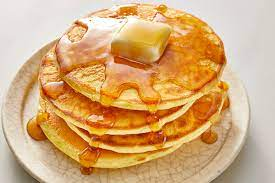
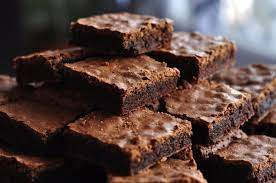
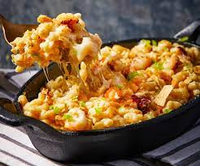
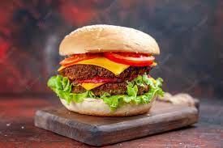

Pbu agência de intercâmbio
Gastronomia
A culinária dos Estados Unidos reflete a história dos Estados Unidos, mesclando as contribuições culinárias de vários grupos de pessoas de todo o mundo, incluindo; afro-americanos, asiáticos, europeus, ilhéus do Pacífico e sul-americanos.
Exemplos:

Pancakes
Panqueca é um tipo de massa frita em pouco óleo sobre uma chapa ou frigideira quente, feita basicamente com ovos, farinha e leite. Existem muitas variações regionais de panquecas, algumas contendo fermento ou outros ingredientes.

Brownie
Brownie é uma sobremesa de chocolate típico da culinária dos Estados Unidos e pode considerar-se um bolo feito num tabuleiro para bolos e partido em pequenos quadrados.

Hot Dog
Um cachorro-quente é uma comida típica dos Estados Unidos em que se coloca salsicha dentro de um pão sovado. Nos Estados Unidos, o preparo típico do cachorro-quente é colocando a salsicha com o molho agridoce, picles à base de pepino, mostarda e ketchup.

Apple Pie
Uma torta de maçã, é um doce cozido no forno recheada de maçãs.

Mac n' Cheese
Macaroni and cheese é um prato típico dos Estados Unidos, feito com massa-cotovelo e queijo ralado
Macarrão com queijo.

Hamburger
Um hambúrguer é um alimento que consiste em recheios - geralmente um hambúrguer de carne moída, geralmente carne bovina - colocados dentro de um pão fatiado ou pão.